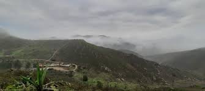

2: Su Rol como Centro de Poder y Sociedad Jerárquica

Chan Chan no era solo una ciudad, sino el corazón político y religioso de un vasto reino que se extendía por casi mil kilómetros de costa.
- Centro Administrativo y de Control: La ciudad centralizaba el poder y la toma de decisiones del Reino Chimú. Desde aquí se gestionaba la agricultura, el comercio y los asuntos militares, lo que demuestra la sofisticación de su organización social.
- Organización Social y Jerarquía: La estructura de la ciudad refleja una sociedad rígidamente estratificada. Las ciudadelas eran habitadas por la élite gobernante, mientras que las clases más bajas vivían en áreas más sencillas fuera de los grandes complejos. Esta disposición urbana es una manifestación física de su estructura social.
- Función Funeraria: Una vez que un gobernante moría, su ciudadela se convertía en su mausoleo. El nuevo gobernante construía su propio palacio, un sistema conocido como "herencia partida", que impulsó la expansión de la ciudad y el poder del reino.